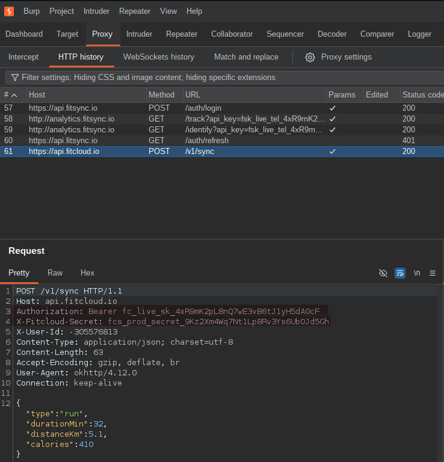
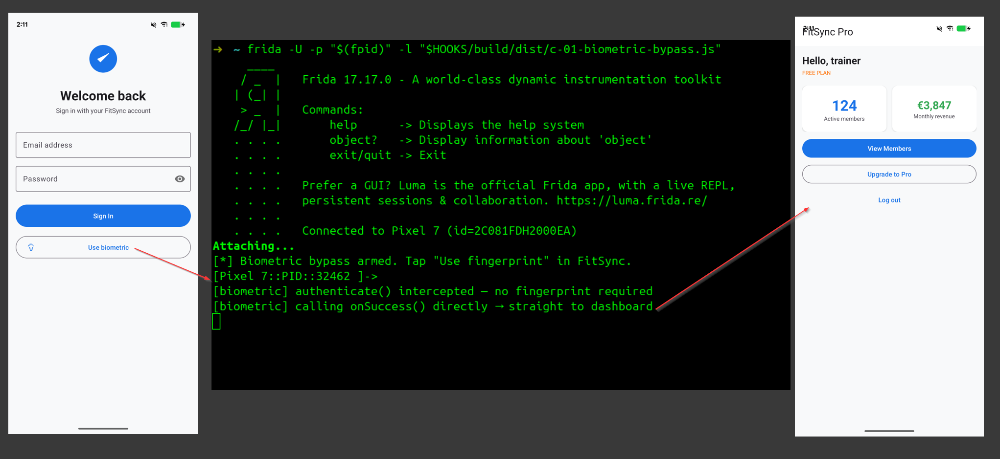
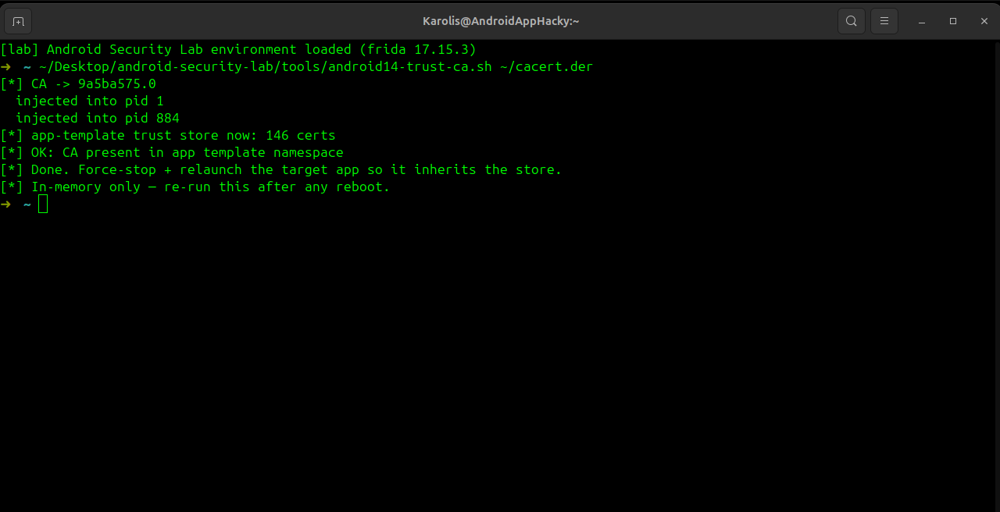

I break Android apps — static analysis, runtime hooking, API abuse. Bug bounty hunter and mobile pentester focused on finding what apps shouldn't be hiding.
$ python3 apk-audit.py com.example.app.apk
══════════════════════════════════
apk-audit v0.1.0
Target : com.example.app.apk
══════════════════════════════════
✓ MobSF scan complete
! Secrets found AWS key · Stripe live key
✓ Manifest issues exported Activity
✓ Crypto issues ECB mode · DES
══════════════════════════════════
Risk score : 78/100 — HIGH RISK
🔴 CRITICAL : 2
🟠 HIGH : 4
🟡 MEDIUM : 3
══════════════════════════════════
Report → report.md | JSON → report.json
12
Public repos
7
Security tools built
18
Vulns in my practice app
6
Technical articles
// ABOUT
I specialise in Android application security — pulling apart APKs, hunting for exposed secrets, weak crypto, and misconfigured APIs that developers left in without realising.
My background is in Android development, which means I understand how apps are built — and exactly where the shortcuts get taken. That makes it faster to find the things that matter.
// FOCUS AREAS
Static & dynamic analysis — decompiling, deobfuscating, and instrumenting APKs end to end.
Runtime instrumentation — Frida hooking to bypass auth, root/SSL-pinning, and catch secrets in memory.
API & backend abuse — intercepting traffic to find broken auth, IDORs, and open cloud endpoints.
Tooling & automation — building my own scanners so repetitive checks run themselves.
Reporting — CVSS-scored findings mapped to OWASP MASVS, written the way a client actually reads them.
// TOOLS & STACK
// OPEN SOURCE
Drop in an APK and get an interactive map of how the app works — screen-flow graph, network endpoints, tech stack and permissions. Reads Jetpack Compose and obfuscated apps, with a call-graph pass that recovers Compose navigation.
Full automated APK security audit. Runs MobSF, scans for hardcoded secrets, checks the manifest and smali for crypto, WebView, and storage issues. Outputs a unified report mapped to OWASP MASVS 2.0 — no browser needed.
Runtime Frida hook suite that instruments FitSync live on a physical rooted device — bypassing the biometric gate, catching a static-IV cipher, dumping the auth token out of memory, and watching PII leave for analytics.
// SUPPORTING TOOLKIT
Hover to pause an orbit, click a tool to open its repo.
// DELIVERABLE
Finding bugs is only half the job — clients need a report they can actually act on. To show that side of the work, I ran a full black-box + grey-box mobile pentest against FitSync Pro, the vulnerable practice app above, and wrote it up using my own reporting template: methodology, CVSS-scored findings, evidence, and a remediation plan — the same structure I'd hand to a real client.
Worth being upfront about: FitSync Pro isn't a real client, it's an app I built myself with 18 planted vulnerabilities so I'd have something realistic to test and report on. Below is the full report exactly as a client would receive it — same document, findings and formatting.
2
Critical
9
High
7
Medium
Hardcoded Third-Party API Keys & Secrets in APK
Live FitCloud and telemetry credentials shipped inside the APK — recoverable offline with jadx, confirmed live in Burp on the wire.

Biometric Authentication Not Cryptographically Bound
No CryptoObject behind the fingerprint prompt — a runtime hook forces the success callback and reaches the dashboard with no finger presented.

Certificate Pinning Silently Disabled
Pinning is configured but the pin-set is commented out — every HTTPS call is readable with just a user-installed CA, no unpinning bypass needed.

Firebase Realtime Database with Open Security Rules
The Firebase project behind the app is one open-rules mistake away from handing out the entire member database with no authentication at all.
+ 14 more findings in the full report — auth, storage, network, and platform issues.
The complete deliverable — document control, executive summary, scope, methodology, all 18 findings with evidence, risk summary, and remediation plan.
// WRITING
What an Android App Really Does When You Hook It
Medium · Android Security · FitSync #3
What an Android App Really Sends: Intercepting Traffic with Burp
Medium · Android Security · FitSync #2
What's Really Inside an Android APK: A Deep Dive into Static Analysis
Medium · Android Security · FitSync #1
AI-Powered Android Apps with Google ML Kit
Medium · Android Dev
Android Dev ≠ Frontend Dev — Here's Why
Medium · Android Dev
UK Crime Mapping App — MVVM & Jetpack Compose
Medium · Android Dev
// CONTACT
Open to pentest engagements, bug bounty collaborations, or just talking Android security.
karollismarmokas@gmail.com